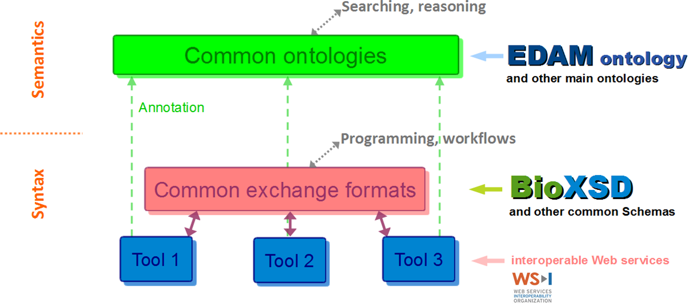

A data model for biomolecular sequences, features, alignments, references
Suitable as an exchange format for Web services and programmatic libraries
News
BioXSD version 1.1, release 1.1.3
The next stable minor release of BioXSD 1.1, version BioXSD 1.1.3, was released on the 15th of May, 2015.
As all minor releases of BioXSD are compatible with all previous and future minor releases within the last major version/namespace, the BioXSD 1.1.3 is "backwards and forwards compatible" with all BioXSD 1.1 data instances (i.e. less restricted than the previous versions, and extended with non-mandatory new attributes/elements).
For the list of changes, please refer to the CHANGELOG in the BioXSD-1.1.xsd file.
Developments towards BioXSD version 1.2 (the next major, "backwards incompatible" release) are ongoing in parallel, currently in a pre-implementation stage experimenting with essential design decisions. The 1.2 developments at the moment focus on interoperability with JSON, GTrack, JSON schema, BSON, EXI, RDF (and potentially later also other Semantic Web formats, AVRO/Hadoop, RELAX NG or other alternative schema languages), with the PROV provenance metadata, and migration to XML Schema version 1.1.
BioXSD becoming more "open"
BioXSD 1.1 is now available under a CC BY-SA 4.0 licence! Please note also the new Code of Conduct, outlined in BioXSD-1.1.xsd. In addition, we finally started the long-desired transition to the new source-files repository at http://github.com/bioxsd/bioxsd. We believe that this will bring more transparency to the developments and maintenance of BioXSD, and decrease the friction for participating in the future evolution of BioXSD and related software.
Enhanced and standardised provenance metadata are under development
We are improving the provenance metadata in BioXSD, by implementing a rich but simple model that will be aligned with the W3C PROV standard. It will most likely be part of the next minor release.
Thanks shall among others be sent to the OpenBio Codefest 2013 for input and discussions.
For desired additions into the next release, please contact developers@bioxsd.org.
BioXSD version 1.1, release 1.1.2
A minor release of BioXSD 1.1, the version BioXSD 1.1.2, was released on the 13th of May, 2013.
As all minor releases of BioXSD are compatible with all previous minor releases within the last major release, the BioXSD 1.1.2 is backwards compatible with BioXSD 1.1 data (i.e. less restricted).
For the list of changes, please refer to the CHANGELOG in the BioXSD-1.1.xsd file.
The 50 BioXSD-compatible Web services challenge
Volunteers are still warmly welcome to join the 50 BioXSD-compatible Web services challenge!
The aim is to provide compatible Web services and other tools that adopt BioXSD as one of their input/output formats.
Implementations have already been ongoing at CBS in Greater Copenhagen (Denmark), Rostlab in Greater Munich (Germany), IBCP in Lyon (France), CBU in Bergen (Norway), and at a couple of more sites.
For more details, help, and consultation, please contact support@bioxsd.org.
About
BioXSD is a data model defining exchange formats of basic bioinformatics types of data.
BioXSD aims to serve as a common, canonical tree-structured format (XML, JSON, binary) for the basic bioinformatics data
Canonical data format does not mean "the only format", but an exchange format that can be common to several tools (as one of multiple formats the tools are supporting). Tools can produce and consume BioXSD directly, or BioXSD can be used as an intermediate canonical format rich enough to enable conversions among diverse formats. Using common exchange format enables smooth integration of compatible tools into analysis workflows.
BioXSD is a rich but not too complicated data model and exchange format for sequences, alignments, feature records, and references to external resources.
Specialised standard XML formats such as for example SBML, MAGE-ML, GCDML, PDBML, PSI MI MIF, PhyloXML or NeXML are orthogonal efforts and should be used whereever applicable. BioXSD aims at filling the gap between these specialised XML formats.
BioXSD enables deployment of globally and smoothly interoperable bioinformatics tools on the World Wide Web of Services.
BioXSD supports HTTP/"REST" Web services and WS-I compliant SOAP Web services, and interoperates with ordinary HTTP/REST, SOAP, and XML libraries for common programming languages. No other infrastructure than standard HTTP, XML, and eventually SOAP is necessary for using BioXSD-compatible Web services.
BioXSD is a "blue-collar" initiative originating from the inside of the bioinformatics community, initiated among others by the EMBRACE project partners and the DBCLS BioHackathon 2008 and 2009 participants.

The portfolio of standards according to EMBRACE
BioXSD data-type definitions are annotated with EDAM and with a few main Semantic-Web vocabularies. BioXSD thus offers ready-made building blocks for tool interfaces with a globally defined, controlled meaning (semantics).
BioXSD has been developed by analysing existing requirements, tools, Web services, data formats, and ontologies.
Feasibility was tested at different pilot providers, using diverse libraries and programming languages.
BioXSD types can be used directly if applicable; or can be included in other standard or custom types, extended or restricted.
With tools that use other or proprietary formats, BioXSD can be used as the canonical intermediate exchange format.
Open collaboration within the community: BioXSD welcomes feature requests, suggestions, and new collaborations!
To submit your suggestions and requirements, please write to developers@bioxsd.org or post an issue at http://github.com/bioxsd/bioxsd.
A BioXSD poster
Publications:
If using BioXSD in work published or advertised as a scholarly publication, please reference:
Kalaš, M., Puntervoll, P., Joseph, A.,
Bartaševičiūtė (now Karosiene), E.,
Töpfer, A., Venkataraman, P., Pettifer, S., Bryne, J.C.,
Ison, J., Blanchet, C., Rapacki, K. and Jonassen, I.
(2010).
BioXSD: the common data-exchange format for everyday bioinformatics web services.
Bioinformatics, 26, i540-i546.
doi: 10.1093/bioinformatics/btq391 PMID: 20823319
If using the optimised sequence/genome feature representation (since BioXSD 1.1), please reference also:
Gundersen, S., Kalaš, M., Abul, O.,
Frigessi, A., Hovig, E. and Sandve, G.K.
(2011).
Identifying elemental genomic track types and representing them uniformly.
BMC Bioinformatics, 212, 494.
doi: 10.1186/1471-2105-12-494 PMID: 22208806
BioXSD 1.1 has been developed hand-in-hand with GTrack, the unifying tabular format for sequence/genome features. Both formats use the same tactics for optimising size of diverse kinds of feature records, via flexible options for recording features' positions and other data.
The XML Schema
BioXSD 1.1 (namespace http://bioxsd.org/BioXSD-1.1) is available at http://bioxsd.org/BioXSD-1.1.xsd. This latest stable version is available for implementations, actively maintained, and open to further developments. New requirements and suggestions for changes are welcome and may be reflected in future versions.
http://bioxsd.org/BioXSD-1.1.xsd is the canonical schema location to be
- used for XML data instances
xsi:schemaLocation="http://bioxsd.org/BioXSD-1.1 http://bioxsd.org/BioXSD-1.1.xsd"
working example
- imported in document XSDs (including Web services' WSDLs)
<xs:import namespace="http://bioxsd.org/BioXSD-1.1" schemaLocation="http://bioxsd.org/BioXSD-1.1.xsd"/>
working example XSD and instance
- or to be synchronised with its future releases in case of publishing custom-annotated or custom-modified BioXSDs.
(Note: There is no "worked-around" version of BioXSD 1.1 available for SOAP Web service providers using Python ZSI for their backend SOAP stack. It can be made available if required, please contact support@bioxsd.org.)
Older BioXSD 1.0 (namespace http://bioxsd.org/BioXSD-1.0) is available at http://bioxsd.org/BioXSD-1.0.xsd.
(For SOAP Web service providers using Python ZSI for their backend SOAP stack: Due to some important basic features missing in the Python Zolera Soap Infrastructure (ZSI) library, a special version for generating ZSI code is at
http://bioxsd.org/BioXSD-1.0.zsi.Workaround.xsd.
Do not forget to get the ZSI patch for the empty-complexType bug.
This xsd is "SOAP-compatible" with the normal xsd. It means that the services in Python should be generated from WSDLs importing the BioXSD-x.x.zsi.Workaround.xsd Schema,
but WSDLs of the deployed services should then be importing the normal BioXSD-x.x.xsd Schema.)
The source files and releases of the BioXSD schema, of supportive utility software, and of documentation are in transition to http://github.com/bioxsd/bioxsd, and will gradually appear there.

BioXSD data models and schemata are licensed under a Creative Commons Attribution-ShareAlike 4.0 International License (CC BY-SA 4.0). Please note also the Code of Conduct for derived work, outlined at the top of the http://bioxsd.org/BioXSD-1.1.xsd file.
For release information including CHANGELOG, please refer to the bottom of the XSD files.
Example workflows
Example workflows (analysis pipelines) combine multiple bioinformatics Web services using BioXSD.
Workflows show that such services are smoothly compatible.
Compliant tools
Thanks to the providers of bioinformatics tools who started adopting BioXSD as pilot users, the number of services and software compatible with BioXSD rises. Currently adapted tools are:
Web services:
- CBS, DTU, Greater Copenhagen, Denmark:
MaxAlign,
ProP,
NetNES
- CBU, U Bergen, Norway:
BLAST
- IBCP, CNRS, Lyon, France:
ClustalW,
BLAST,
GorIV
- UBio, CNIO, Madrid, Spain:
iHOP
Software:
If you started using BioXSD for your software, services, libraries, or other tools, please let us know by sending an email to support@bioxsd.org. For maintenance and support purposes we would love to know about the providers using BioXSD. A registration system will be available in the future.
Ongoing development
- online BioXSD tutorial
- tools to translate between BioXSD and other formats (XML, JSON, binary, textual & tabular formats, RDF), and other supportive tools
- interoperability with the PROV standard for provenance metadata
- additional examples and test-case workflows, including multiple programming/workflow languages and XSD|XML|EXI|JSON|BSON|HTTP|SOAP libraries
- enhancements of the existing BioXSD format. Objective is to support more conveniently and efficiently: experimental data (e.g. gene expression), sequence variation (in individuals or population), whole-genome alignments, sequence patterns, profiles and motifs, and other types of data
Contributions from the community are warmly welcome and needed! (http://github.com/bioxsd/bioxsd, developers@bioxsd.org)
Volunteers are welcome to join the 50 BioXSD-compatible Web services challenge.
Credits
BioXSD has been and is further being developed as part of multiple collaborative projects. There has never been any funding directed exclusively to BioXSD.
Contribution and advise to the development of BioXSD:
CBU, University of Bergen, Norway:
Matúš Kalaš, Inge Jonassen, Pål Puntervoll (until 2010; now Uni Miljø, Bergen), Jan Christian Bryne (until 2010; later Oslo University Hospital), Armin Töpfer (until 2011; also CeBiTec, Bielefeld, Germany; later D-BSSE, ETH Zürich, Basel, Switzerland), Prabu Venkataraman (until 2011; later Fiskeridirektoratet, Bergen)
CBS, DTU, Greater Copenhagen, Denmark:
Kristoffer Rapacki, Jon Ison (at CBS, DTU since 2014), Edita Karosiene (until 2010)
Oslo University Hospital, Norway:
Sveinung Gundersen
IBCP, CNRS, Lyon, France:
Christophe Blanchet (now also IFB, Gif-sur-Yvette, France), Alexandre Joseph (until 2010)
EBI, EMBL, Hinxton, U.K.:
Jon Ison (until 2013; now see at CBS, DTU above), Rodrigo Lopez
CS, University of Manchester, U.K.:
Steve Pettifer
Rostlab, TUM, Greater Munich, Germany:
László Kaján (until 2013; now itelligence, Poznań, Poland)
... and multiple supporters at diverse research institutions
Funding:
Research Council of Norway (to eSysbio, to the FUGE Bioinformatics Platform, and ELIXIR.NO to the Norwegian Bioinformatics Platform)
Villum Foundation (to the Center for Disease Systems Biology)
l'Agence Nationale de la Recherche (to HIPCAL)
Alexander von Humboldt Foundation (through the German Ministry for Research and Education)
European Commission FP6 and FP7 (to EMBRACE and ELIXIR)